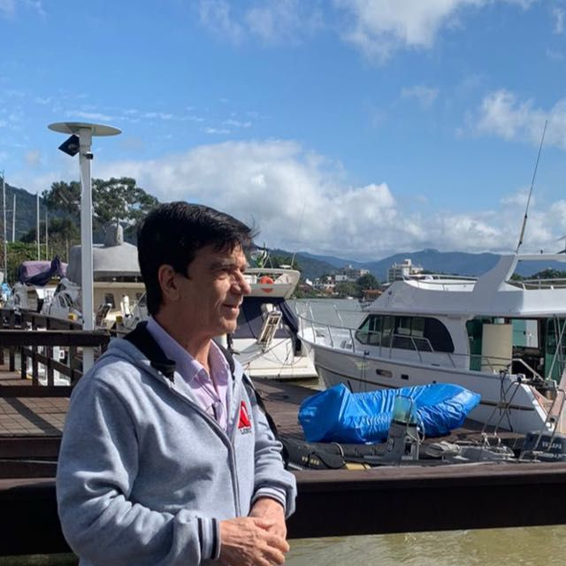

Desenvolvedor de sistemas eletrônicos com atuação nas áreas de automação, instrumentação e engenharia elétrica e eletrônica, com formação e trajetória acadêmica em Física e Engenharia.
Atuo no desenvolvimento de hardware, software e sistemas integrados, aplicando conhecimentos multidisciplinares adquiridos ao longo da minha carreira acadêmica e profissional para criar soluções tecnológicas eficientes, confiáveis e alinhadas às necessidades de cada projeto.

Sou Físico e Engenheiro Eletricista, com atuação como Professor Titular aposentado da Universidade Federal de Rondônia (UNIR).
Ao longo da minha trajetória acadêmica e profissional, atuei em pesquisa científica, formação de recursos humanos e desenvolvimento de projetos tecnológicos, integrando ensino, inovação e engenharia aplicada.
Eletrotécnica
Física
Geociências e Meio Ambiente
Geociências e Meio Ambiente
Centro Universitário Claretiano
Universidade Federal de Rondônia
Universidade Estadual Paulista "Júlio de Mesquita Filho" (Unesp)
Centro Universitário Claretiano
Geociências e Meio Ambiente
Universidade Estadual Paulista "Júlio de Mesquita Filho" (Unesp)
Geociências e Meio Ambiente
Universidade Estadual Paulista "Júlio de Mesquita Filho" (Unesp)